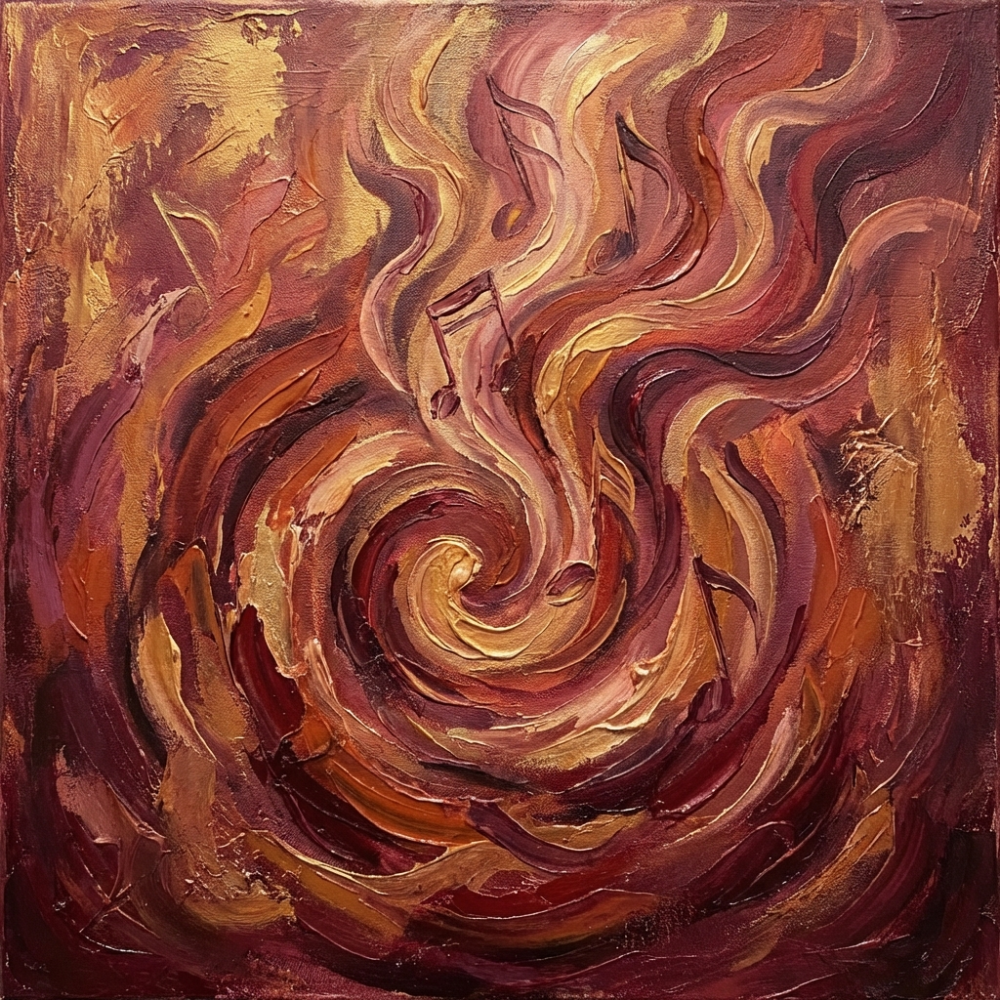

Le note dell'anima

Note di una musica diversa
prorompono dall'intimo,
cullano e impongono
all'ascolto.
prorompono dall'intimo,
cullano e impongono
all'ascolto.
Frasi senza forma
sussurrano, vagano
a voler tessere pensieri.
sussurrano, vagano
a voler tessere pensieri.
Sentimenti ancora muti
spingono alle porte
in attesa di esser liberati.
spingono alle porte
in attesa di esser liberati.
"Troppe, vi ho detto, troppe
in una volta sola
non possono trovar la strada".
in una volta sola
non possono trovar la strada".
Paola Spremulli